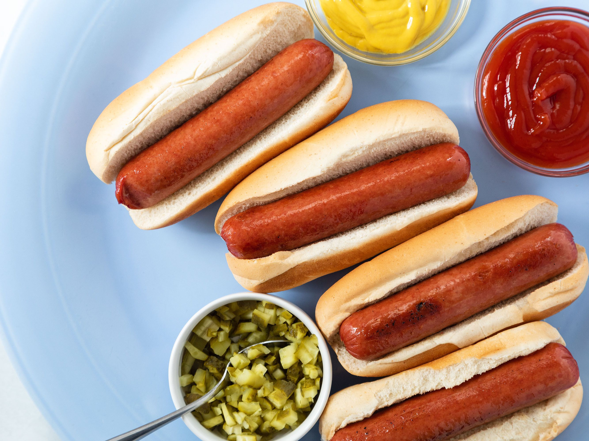

Hot Dog

Description
Hot Dog!
- 4 Hot Dog buns
- 4 Hot Dogs
Steps
- Preheat an air fryer to 400 degrees F (200 degrees C).
- Place buns in a single layer in the air fryer basket; cook in the preheated air fryer until crisp, about 2 minutes. Remove buns to a plate.
- Place hot dogs in a single layer in the air fryer basket; cook for 3 minutes. Serve hot dogs in toasted buns.